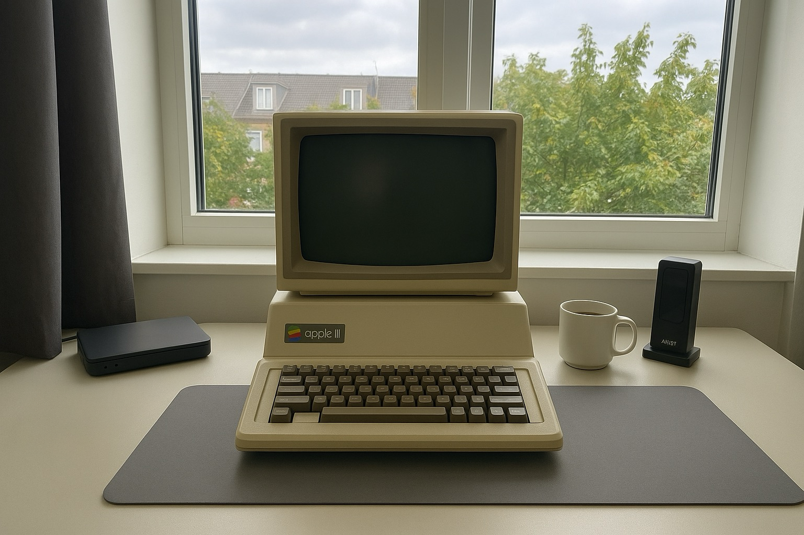

Min Computer

Type
Til hverdag bruger jeg min Apple III. Den primære funktioner er at skrive, læse, lave regneark og lidt gaming i ny og næ. Computeren er lidt langsom efterhånden, men den fungerer fint og kan læse de fleste disketter.
Specifikationer
- Processor:
- Synertek 6502A, 1 MHz
- Hukommelse:
- 128 KB RAM
- Lagring:
- Diskettedrev, 140 KB pr. diskette
- Skærm:
- Monokrom CRT
- Styresystem:
- Apple SOS